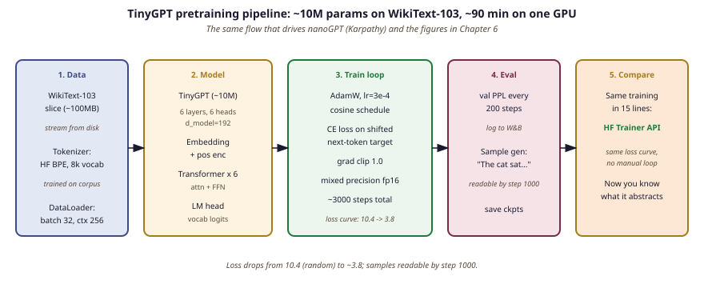

"I burned a real GPU-hour on real tokens last Tuesday, and now I understand cross-entropy in a way no slide deck ever managed."
Tensor, GPU-Hour-Veteran AI Agent
Pretraining a tiny LM from scratch is the fastest way to internalize the loss curve, the data-pipeline plumbing, and the scaling-law intuition the rest of this part formalizes. This lab walks the full pipeline end-to-end on a model small enough to fit on a laptop GPU.
Prerequisites
This lab assumes the transformer internals from Section 4.1, the next-token prediction objective from Section 6.2, and the scaling-law intuitions from Section 6.3. You should be comfortable with PyTorch modules, dataloaders, and basic CUDA tensor operations from Section 0.3. Access to a single GPU with 8 GB or more of VRAM is enough; the lab also runs on CPU for the smallest configuration.
Andrej Karpathy's nanoGPT repo, the spiritual ancestor of every "pretrain a tiny LM" lab on the internet, is roughly 300 lines of PyTorch and has been forked more than 30,000 times. Its README cheerfully notes that you can train a Shakespeare-quoting bot in under a minute on a single GPU, which has launched more graduate research projects, hackathon demos, and existential crises than almost any other file in modern ML.

Lab Overview
Objective
Train a 10M-parameter GPT-style language model from scratch on a small text corpus using raw PyTorch, then replicate the same training loop in 15 lines with the Hugging Face Trainer API to appreciate what the library abstracts away.
What You'll Practice
- Defining a minimal GPT architecture (embeddings, transformer blocks, LM head)
- Writing a training loop with cross-entropy loss and gradient clipping
- Monitoring training loss and generating sample completions
- Using the Hugging Face Trainer to replace the manual loop
Setup
A CUDA GPU is recommended but not strictly required. Training on CPU will be significantly slower (expect 20+ minutes per epoch).
Steps
Step 1: Define a tiny GPT model
Build a small transformer with 6 layers, 6 heads, and an embedding dimension of 192, totaling roughly 10M parameters.
# Define a tiny GPT model (~10M params) for training experiments.
# Uses 6 layers, 6 attention heads, and 192-dim embeddings.
import torch
import torch.nn as nn
from transformers import GPT2Tokenizer
tokenizer = GPT2Tokenizer.from_pretrained("gpt2")
tokenizer.pad_token = tokenizer.eos_token
vocab_size = tokenizer.vocab_size
class TinyGPTConfig:
vocab_size = vocab_size
n_layer = 6
n_head = 6
n_embd = 192
block_size = 256
dropout = 0.1
class TinyGPT(nn.Module):
def __init__(self, config):
super().__init__()
self.config = config
self.token_emb = nn.Embedding(config.vocab_size, config.n_embd)
self.pos_emb = nn.Embedding(config.block_size, config.n_embd)
self.drop = nn.Dropout(config.dropout)
layer = nn.TransformerEncoderLayer(
d_model=config.n_embd, nhead=config.n_head,
dim_feedforward=config.n_embd * 4, dropout=config.dropout,
activation="gelu", batch_first=True, norm_first=True
)
self.transformer = nn.TransformerEncoder(layer, num_layers=config.n_layer)
self.ln_f = nn.LayerNorm(config.n_embd)
self.lm_head = nn.Linear(config.n_embd, config.vocab_size, bias=False)
# Weight tying
self.lm_head.weight = self.token_emb.weight
n_params = sum(p.numel() for p in self.parameters())
print(f"Model parameters: {n_params:,} ({n_params/1e6:.1f}M)")
def forward(self, input_ids, labels=None):
B, T = input_ids.shape
positions = torch.arange(T, device=input_ids.device).unsqueeze(0)
x = self.drop(self.token_emb(input_ids) + self.pos_emb(positions))
# Causal mask
mask = nn.Transformer.generate_square_subsequent_mask(T, device=input_ids.device)
x = self.transformer(x, mask=mask, is_causal=True)
x = self.ln_f(x)
logits = self.lm_head(x)
loss = None
if labels is not None:
loss = nn.functional.cross_entropy(
logits[:, :-1].contiguous().view(-1, logits.size(-1)),
labels[:, 1:].contiguous().view(-1)
)
return logits, loss
config = TinyGPTConfig()
model = TinyGPT(config)
Hint
Weight tying (sharing the token embedding matrix with the LM head) reduces parameter count by almost half and improves training stability. This is standard practice in modern language models.
Step 2: Prepare data and train with a manual loop
Load a small corpus, tokenize it into chunks, and run a training loop with AdamW and gradient clipping.
import torch
# Load WikiText-2, tokenize into fixed-length chunks, and train
# with AdamW optimizer plus gradient clipping for stability.
from datasets import load_dataset
from torch.utils.data import DataLoader
# Load and tokenize data
ds = load_dataset("wikitext", "wikitext-2-raw-v1", split="train")
ds = ds.filter(lambda x: len(x["text"].strip()) > 50)
def tokenize_fn(examples):
tokens = tokenizer(examples["text"], truncation=False)["input_ids"]
all_tok = [t for doc in tokens for t in doc]
bs = config.block_size
chunks = [all_tok[i:i+bs] for i in range(0, len(all_tok)-bs+1, bs)]
return {"input_ids": chunks}
tok_ds = ds.map(tokenize_fn, batched=True, remove_columns=["text"])
tok_ds.set_format("torch")
loader = DataLoader(tok_ds, batch_size=16, shuffle=True)
# Training loop
device = "cuda" if torch.cuda.is_available() else "cpu"
model = model.to(device)
optimizer = torch.optim.AdamW(model.parameters(), lr=3e-4, weight_decay=0.01)
model.train()
for epoch in range(2):
total_loss, steps = 0.0, 0
for batch in loader:
ids = batch["input_ids"].to(device)
_, loss = model(ids, labels=ids)
optimizer.zero_grad()
loss.backward()
torch.nn.utils.clip_grad_norm_(model.parameters(), 1.0)
optimizer.step()
total_loss += loss.item()
steps += 1
if steps % 50 == 0:
print(f"Epoch {epoch+1}, Step {steps}, Loss: {total_loss/steps:.4f}")
print(f"Epoch {epoch+1} complete. Avg loss: {total_loss/steps:.4f}")
Hint
Gradient clipping (max norm of 1.0) prevents training instability from occasional large gradients. Watch for the loss to decrease from around 10 (random predictions over 50k vocab) down toward 4-5 after a couple of epochs.
Step 3: Generate sample text
Use the trained model to generate text and see what it has learned.
import torch
# Generate text from the trained model using temperature sampling.
# Demonstrates autoregressive decoding: predict one token at a time.
model.eval()
def generate(prompt, max_tokens=100, temperature=0.8):
ids = tokenizer.encode(prompt, return_tensors="pt").to(device)
for _ in range(max_tokens):
with torch.no_grad():
logits, _ = model(ids)
logits = logits[:, -1, :] / temperature
probs = torch.softmax(logits, dim=-1)
next_tok = torch.multinomial(probs, num_samples=1)
ids = torch.cat([ids, next_tok], dim=-1)
if ids.shape[1] > config.block_size:
ids = ids[:, -config.block_size:]
return tokenizer.decode(ids[0], skip_special_tokens=True)
print("=== Generated Samples ===")
for p in ["The history of", "In recent years", "Scientists discovered"]:
print(f"\nPrompt: {p}")
print(generate(p))
Hint
A 10M-parameter model trained on WikiText-2 will not produce fluent prose, but you should see it learn basic English word patterns and grammar. The quality gap compared to GPT-2 (124M, trained on much more data) illustrates why scale matters.
Step 4: The library shortcut with Hugging Face Trainer
Replace the entire manual loop with the Trainer API in about 15 lines.
# Library shortcut: replace the entire manual training loop with
# HuggingFace Trainer in ~15 lines. Handles batching, logging, checkpoints.
from transformers import Trainer, TrainingArguments, GPT2Config, GPT2LMHeadModel
from transformers import DataCollatorForLanguageModeling
# Define model using HuggingFace config
hf_config = GPT2Config(
vocab_size=vocab_size, n_layer=6, n_head=6, n_embd=192, n_positions=256
)
hf_model = GPT2LMHeadModel(hf_config)
collator = DataCollatorForLanguageModeling(tokenizer=tokenizer, mlm=False)
args = TrainingArguments(
output_dir="./tiny-gpt-hf", num_train_epochs=2,
per_device_train_batch_size=16, learning_rate=3e-4,
logging_steps=50, save_strategy="no", report_to="none",
gradient_accumulation_steps=1, max_grad_norm=1.0,
)
trainer = Trainer(
model=hf_model, args=args,
train_dataset=tok_ds, data_collator=collator,
)
trainer.train()
print("Trainer finished. Final loss:", trainer.state.log_history[-1].get("train_loss"))Hint
The Trainer handles the training loop, gradient accumulation, clipping, logging, checkpointing, and distributed training. For research prototyping, the manual loop gives more control; for production training, the Trainer saves significant engineering effort.
Expected Output
- A ~10M parameter model that fits easily on a single GPU (or runs on CPU)
- Training loss decreasing from ~10 to ~4-5 over 2 epochs
- Generated text showing basic English patterns (not fluent, but clearly learned structure)
- Identical training behavior from the Trainer API with far less code
Stretch Goals
- Add a cosine learning rate scheduler and compare final loss
- Double the model size (12 layers, 384 embedding dim) and measure how loss improves
- Implement a simple evaluation loop that computes perplexity on the validation split
- Weight tying halves the parameter count: sharing the token embedding matrix with the LM head is standard practice in modern language models and improves training stability without harming quality.
- Cross-entropy loss makes the learning curve tangible: the descent from ~10 (random over a 50k vocabulary) toward 4-5 over two epochs is the moment scaling-law intuitions stop being abstract.
- Gradient clipping at max-norm 1.0 buys stability: occasional large gradients early in training can derail an otherwise sound run, and clip_grad_norm_ is the single line that prevents most of them.
- Manual loops teach control, Trainer ships production: 15 lines of Hugging Face Trainer replicate the manual loop and add batching, logging, checkpointing, and distributed-training plumbing for free.
- A 10M-parameter model on WikiText-2 is a scale demonstration: the gap in generated text quality between this run and GPT-2 124M trained on far more data is the lab's main argument for why parameter count and token count both matter.
This lab pretrains a decoder-only model. The classical alternative is to pretrain an encoder-decoder translation model with the recipe from the Annotated Transformer (Harvard NLP). The two key building blocks are: (1) a Batch class that bundles source tokens, shifted target tokens, source padding mask, and target causal-and-padding mask into one object, so the training loop is a one-liner loss = model(batch).backward(); and (2) the Noam optimizer from Section 6.5.5. The full pipeline (Batch + Noam + label smoothing + greedy / beam decoding) is the standard reproduction target for any multilingual translation experiment, and is the natural extension of this lab if your goal is multilingual rather than monolingual pretraining (see Section 7.4 for the multilingual encoders that grew out of this lineage).
What's Next?
This completes our coverage of prompt engineering techniques. In the next chapter, Chapter 15: Hybrid ML and LLM Systems, we explore frameworks for deciding when to use classical ML, LLMs, or a hybrid approach, and how to combine them effectively.